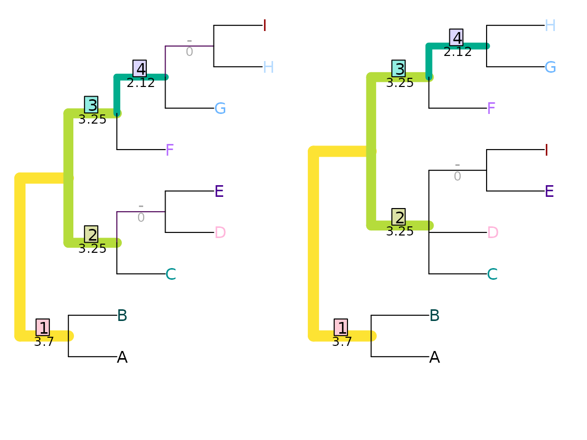

Generalized Robinson-Foulds distances
Martin R. Smith
2020-01-28
Source:vignettes/Generalized-RF.Rmd
Generalized-RF.RmdThis document outlines the similarity measures employed by the generalized Robinson-Foulds distances implemented in this package.
Generalized RF distances are introduced elsewhere; before you read further, you may also wish to revisit how to use the TreeDist package, and relevant principles of information theory.
Shared phylogenetic information
Under the shared phylogenetic information tree distance measure (Smith, 2020), pairs of splits are assigned a similarity score that corresponds to the amount of phylogenetic information (sensu Steel & Penny, 2006) that they share in common (see separate vignette).

## [1] 12.32188The problem with arboreal matchings
Shared phylogenetic information is an arboreal similarity score: that is to say, it assigns zero similarity to splits that cannot both occur on a single tree.
This leads to problematic behaviour in certain cases: for example, when the position of two distant taxa is swapped, similarities within a tree can be obscured.
The two trees below are identical but for the position of A and J, yet receive zero similarity under arboreal metrics.
VisualizeMatching(SharedPhylogeneticInfo, matchZeros = FALSE, AtoJ, AotJ,
Plot=TreeDistPlot, leaveRoom = FALSE, prune=c(5, 18))
Mutual clustering information
Scoring each pair of splits according to their mutual clustering information (Smith, 2020) (see separate vignette) results in a non-arboreal information-based tree distance metric that, as desired, assigns a non-zero similarity to the case that received zero similarity under an arboreal matching:
VisualizeMatching(MutualClusteringInfo, AtoJ, AotJ, matchZeros = FALSE,
Plot=TreeDistPlot, leaveRoom = FALSE, prune=c(5, 18))
## [1] 1.348339Because no pair of non-trivial splits has zero mutual clustering information, even a dissimilar matching (such as HI|ABCDEFG => EI|ABCDFGH below) is preferred to leaving a split unpaired.
VisualizeMatching(MutualClusteringInfo, tree1, tree2,
Plot=TreeDistPlot, leaveRoom=FALSE, matchZeros = FALSE)
Nye et al. tree similarity metric
The Nye et al. (2006) tree similarity metric scores pairs by considering the elements held in common between subsets of each split.
Consider a pair of splits ABCDEF|GHIJ and ABCDEIJ|FGH. These can be aligned thus:
ABCDEF | GHIJ
ABCDE IJ|FGHThe first pair of subsets, ABCDEF and ABCDEIJ, have five elements in common (ABCDE), and together encompass eight elements (ABCDEFIJ). Their subset score is thus 5/8.
The second pair of subsets, GHIJ and FGH, have two elements (GH) in common, of the five total (FGHIJ), and hence receive a subset score of 2/5.
This split alignment then receives an alignment score corresponding to the lower of the two subset scores, 2/5.
We must now consider the other alignment of this pair of splits,
ABCDEF | GHIJ
FGH|ABCDE IJThis yields subset scores of 1/8 and 2/9, and thus has an alignment score of 1/8. This alignment gives a lower score than the other, so is disregarded. The pair of splits is allocated a similarity score corresponding to the better alignment: 2/5.
As such, splits that match exactly will receive a similarity score of 1, in a manner analogous to the Robinson-Foulds distance. (This is despite the fact that some splits are more likely to match than others.) It is not possible for a pair of splits to receive a zero similarity score.
VisualizeMatching(NyeTreeSimilarity, tree1, tree2,
Plot=TreeDistPlot, leaveRoom=FALSE, matchZeros = FALSE)
## [1] 3.5Jaccard-Robinson-Foulds metric
Böcker et al. (2013) propose expressly prohibiting contradictory pairings, i.e. pairs of splits that could never occur in the same tree. Such an ‘arboreal’ matching would preclude the pairing of ABCFGHI|DE with ABCDFGH|EI:
## [1] 6.333333VisualizeMatching(JaccardRobinsonFoulds, tree1, tree2,
Plot=TreeDistPlot, leaveRoom=FALSE, matchZeros = FALSE)
Böcker et al. (2013) also suggest raising the split similarity score defined above to an arbitrary exponent. The similarity score is also doubled. By this means, the metric can be made to converge to the Robinson-Foulds metric as the exponent grows towards infinity.

Matching Split Distance
Bogdanowicz & Giaro (2012) propose an alternative distance, which they term the Matching Split Distance.
## [1] 5VisualizeMatching(MatchingSplitDistance, tree1, tree2,
Plot=TreeDistPlot, leaveRoom=FALSE, matchZeros = FALSE)
Note that the visualization shows the difference, rather than the similarity, between splits.
Similar to the Nye et al. similarity metric, this method compares the subsets implied by a pair of splits. Here, the relevant quantity is the number of elements that must be moved from one subset to another in order to make the two splits identical. With the pair of splits
ABCDEF | GHIJ
ABCDE IJ|FGHthree leaves (F, I and J) must be moved before the splits are identical; as such, the pair of splits are assigned a difference score of three.
Formally, where \(S_i\) splits \(n\) leaves into bipartitions \(A_i\) and \(B_i\), the difference score is calculated by
\(n - m\)
where \(m\) counts the number of leaves that already match, and is defined as
\(m = \max\{|A_1 \cap A_2| + |B_1 \cap B_2|, |A_1 \cap B_2| + |B_1 \cap A_2|\}\)
MatchingSplitDistance(read.tree(text='((a, b, c, d, e, f), (g, h, i, j));'),
read.tree(text='((a, b, c, d, e, i, j), (g, h, f));'))## [1] 3This distance is difficult to normalize, as its maximum value is difficult to calculate.
Information theoretic alternative
In the matching split distance, \(m\) represents a simple count of the number of shared taxa. An alternative is to measure the phylogenetic information content of the largest split consistent with \(S_1\) and \(S_2\):
\(m = \max\{h(A_1 \cap A_2 | B_1 \cap B_2), h(A_1 \cap B_2 | B_1 \cap A_2)\}\)
The most information-rich split consistent with
ABCDEF | GHIJ
ABCDE IJ|FGH is ABCDE | GH, which contains
## [1] 3.169925bits of phylogenetic information, which provides a similarity score for this pairing.
## [1] 17.27586VisualizeMatching(MatchingSplitInfoDistance, tree1, tree2,
Plot=TreeDistPlot, leaveRoom=FALSE, matchZeros = FALSE)
References
Bogdanowicz, D., & Giaro, K. (2012). Matching split distance for unrooted binary phylogenetic trees. IEEE/ACM Transactions on Computational Biology and Bioinformatics, 9(1), 150–160. doi:10.1109/TCBB.2011.48
Böcker, S., Canzar, S., & Klau, G. W. (2013). The generalized Robinson-Foulds metric. In A. Darling & J. Stoye (Eds.), Algorithms in Bioinformatics. WABI 2013. Lecture Notes in Computer Science, vol 8126 (pp. 156–169). Berlin, Heidelberg: Springer. doi:10.1007/978-3-642-40453-5_13
Nye, T. M. W., Liò, P., & Gilks, W. R. (2006). A novel algorithm and web-based tool for comparing two alternative phylogenetic trees. Bioinformatics, 22(1), 117–119. doi:10.1093/bioinformatics/bti720
Smith, M. R. (2020). Information theoretic Generalized Robinson-Foulds metrics for comparing phylogenetic trees. In Review.
Steel, M. A., & Penny, D. (2006). Maximum parsimony and the phylogenetic information in multistate characters. In V. A. Albert (Ed.), Parsimony, phylogeny, and genomics (pp. 163–178). Oxford: Oxford University Press.